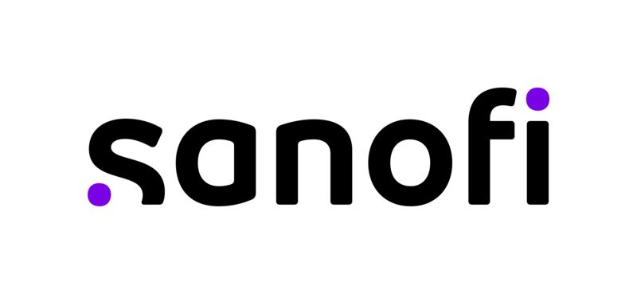
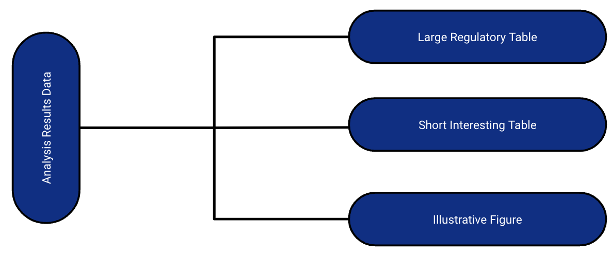

Analysis Results Datasets Using Open-Source Tools from the {pharmaverse}
A Hands-on workshop
Daniel D. Sjoberg and Becca Krouse
This workshop is brought to you by:

Instructors
Daniel Sjoberg, Genentech
Becca Krouse, GSK
Who are we?
What do we do?
Why are we here?
Workshop outline
Introduction to the Analysis Results Standard and ARDs with {cards}
Introduction to the {cardx} Package and ARD Extras
ARD to Tables with {gtsummary} and {tfrmt}
Introduction
This workshop is for you if…
You want to learn about ARDs
You want to learn about new tools for working with ARDs
You want to learn about new tools for making displays from ARDs
Analysis Results Standard
Analysis Results Standard (ARS)
Analysis Results Standard (ARS)
Emerging standard for prospectively encoding statistical analysis reporting pipeline in a machine-readable format.
Logical model that describes analysis results and associated metadata.
Primary objectives:
Leverage analysis results metadata to drive automation of results
Support storage, access, processing, traceability and reproducibility of results
Analysis Results Standard (ARS)
Example ARS Flow
The ARS provides a metadata-driven infrastructure for analysis
Analysis Results Standard (ARS)
Example ARS Flow
The ARS provides a metadata-driven infrastructure for analysis
{cards} serves as the engine for the analysis
Analysis Results Data (ARD)
Encodes statistical analysis outcomes in a machine-readable format.
The ARD model specifies how statistical results are saved into a structured format.
The ARD can be used to to subsequently create tables and figures.
The ARD does not describe the layout of the results
Analysis Results Data (ARD)
After the initial creation of an ARD, the results can later be re-used again and again for subsequent reporting needs.

A few notes about ARDs
Rethinking QC
QC can be focused on the raw and/or formatted values
Optionnally, you don’t need to spend time trying to match formatted values
Note: QC will be more sensitive to floating point
Flexible data file types
ARD can be saved as a dataset (rds, xpt, etc) or json file
ARDs using {cards}
{cards}: Introduction
Part of the Pharmaverse
Collaboration between Roche, GSK, Novartis, and Pfizer
Contains a variety of utilities for making ARDs
Can be used within the ARS workflow and separately
52K downloads per month 🤯
{cards}: ard_continuous()
library(cards)# create ARD with default summary statisticsADSL |>ard_continuous(variables = AGE )
{cards} data frame: 8 x 8
variable context stat_name stat_label stat fmt_fn
1 AGE continuo… N N 254 0
2 AGE continuo… mean Mean 75.087 1
3 AGE continuo… sd SD 8.246 1
4 AGE continuo… median Median 77 1
5 AGE continuo… p25 Q1 70 1
6 AGE continuo… p75 Q3 81 1
7 AGE continuo… min Min 51 1
8 AGE continuo… max Max 89 1
ℹ 2 more variables: warning, error
{cards}: ard_continuous() by variable
by: summary statistics are calculated by all combinations of the by variables, including unobserved factor levels
ADSL |>ard_continuous(variables = AGE,by = ARM # stats by treatment arm )
{cards} data frame: 24 x 10
group1 group1_level variable stat_name stat_label stat
1 ARM Placebo AGE N N 86
2 ARM Placebo AGE mean Mean 75.209
3 ARM Placebo AGE sd SD 8.59
4 ARM Placebo AGE median Median 76
5 ARM Placebo AGE p25 Q1 69
6 ARM Placebo AGE p75 Q3 82
7 ARM Placebo AGE min Min 52
8 ARM Placebo AGE max Max 89
9 ARM Xanomeli… AGE N N 84
10 ARM Xanomeli… AGE mean Mean 74.381
ℹ 14 more rows
ℹ Use `print(n = ...)` to see more rows
ℹ 4 more variables: context, fmt_fn, warning, error
{cards}: ard_continuous() statistics
statistic: specify univariate summary statistics. Accepts any function, base R, from a package, or user-defined.
group1 group1_level variable stat_name stat_label stat
1 ARM Placebo AGE cv cv 0.114
2 ARM Xanomeli… AGE cv cv 0.106
3 ARM Xanomeli… AGE cv cv 0.11
ℹ 4 more variables: context, fmt_fn, warning, error
{cards}: ard_continuous() statistics
Customize the statistics returned for each variable
group1 group1_level variable stat_name stat_label stat
1 ARM Placebo AGE cv cv 0.114
2 ARM Placebo AGE2 mean Mean 75.209
3 ARM Placebo AGE2 median Median 76
4 ARM Xanomeli… AGE cv cv 0.106
5 ARM Xanomeli… AGE2 mean Mean 74.381
6 ARM Xanomeli… AGE2 median Median 76
7 ARM Xanomeli… AGE cv cv 0.11
8 ARM Xanomeli… AGE2 mean Mean 75.667
9 ARM Xanomeli… AGE2 median Median 77.5
ℹ 4 more variables: context, fmt_fn, warning, error
group1 group1_level variable stat_name stat_label stat stat_fmt
1 ARM Placebo AGE N N 86 86
2 ARM Placebo AGE mean Mean 75.209 75
3 ARM Placebo AGE sd SD 8.59 8.6
4 ARM Placebo AGE median Median 76 76.0
5 ARM Placebo AGE p25 Q1 69 69.0
6 ARM Placebo AGE p75 Q3 82 82.0
7 ARM Placebo AGE min Min 52 52.0
8 ARM Placebo AGE max Max 89 89.0
9 ARM Xanomeli… AGE N N 84 84
10 ARM Xanomeli… AGE mean Mean 74.381 74
ℹ 14 more rows
ℹ Use `print(n = ...)` to see more rows
ℹ 4 more variables: context, fmt_fn, warning, error
group1 group1_level variable variable_level stat_name stat_label stat
1 ARM Placebo AGEGR1 <65 n n 14
2 ARM Placebo AGEGR1 <65 N N 86
3 ARM Placebo AGEGR1 <65 p % 0.163
4 ARM Placebo AGEGR1 >80 n n 30
5 ARM Placebo AGEGR1 >80 N N 86
6 ARM Placebo AGEGR1 >80 p % 0.349
7 ARM Placebo AGEGR1 65-80 n n 42
8 ARM Placebo AGEGR1 65-80 N N 86
9 ARM Placebo AGEGR1 65-80 p % 0.488
10 ARM Xanomeli… AGEGR1 <65 n n 11
ℹ 17 more rows
ℹ Use `print(n = ...)` to see more rows
ℹ 4 more variables: context, fmt_fn, warning, error
Any unobserved levels of the variables will be present in the resulting ARD.
{cards}: Other Summary Functions
ard_dichotomous(): similar to ard_categorical(), but for dichotomous summaries
ard_hierarchical(): similar to ard_categorical(), but built for nested tabulations, e.g. AE terms within SOC
ard_complex(): similar to ard_continuous(), but the summary functions can be more complex and accepts other arguments like the full and subsetted (within the by groups) data sets.
ard_missing(): tabulates rates of missingness
The results from all these functions are entirely compatible with one another, and can be stacked into a single data frame. 🥞🥞🥞
{cards}: Other Functions
In addition to exporting functions to prepare summaries, {cards} exports many utilities for wrangling ARDs and creating new ARDs.
Constructing: bind_ard(), nest_for_ard(), check_ard_structure(), and many more
Wrangling: rename_ard_columns(), get_ard_statistics(), replace_null_statistic(), etc.
{cards}: Stacking utilities
data and .by are shared by all ard_* calls
Additional Options .overall, .missing, .attributes, and .total_n provide even more results
By default, summaries of the .by variable are included
group1 group1_level variable variable_level stat_name stat_label stat
1 ARM Placebo AGE mean Mean 75.209
2 ARM Placebo AGE sd SD 8.59
3 ARM Placebo AGEGR1 <65 p % 0.163
4 ARM Placebo AGEGR1 >80 p % 0.349
5 ARM Placebo AGEGR1 65-80 p % 0.488
6 ARM Xanomeli… AGE mean Mean 74.381
7 ARM Xanomeli… AGE sd SD 7.886
8 ARM Xanomeli… AGEGR1 <65 p % 0.131
9 ARM Xanomeli… AGEGR1 >80 p % 0.214
10 ARM Xanomeli… AGEGR1 65-80 p % 0.655
ℹ 14 more rows
ℹ Use `print(n = ...)` to see more rows
ℹ 4 more variables: context, fmt_fn, warning, error
Example: Demographics ARD
Example: Demographics ARD
First, compute the continuous summaries for AGE, BMI, HEIGHT, WEIGHT by TRT01A
ard_continuous(data = adsl,by = ,variables =)
Example: Demographics ARD
First, compute the continuous summaries for AGE, BMI, HEIGHT, WEIGHT by TRT01A
group1 group1_level variable stat_name stat_label stat
1 TRT01A Placebo AGE N N 86
2 TRT01A Placebo AGE mean Mean 75.209
3 TRT01A Placebo AGE sd SD 8.59
4 TRT01A Placebo AGE median Median 76
5 TRT01A Placebo AGE p25 Q1 69
6 TRT01A Placebo AGE p75 Q3 82
7 TRT01A Placebo AGE min Min 52
8 TRT01A Placebo AGE max Max 89
9 TRT01A Placebo BMI N N 86
10 TRT01A Placebo BMI mean Mean 23.645
ℹ 86 more rows
ℹ Use `print(n = ...)` to see more rows
ℹ 4 more variables: context, fmt_fn, warning, error
Example: Demographics ARD
Next, compute the categorical summaries for AGEGR1, SEX, RACE, ETHNIC by TRT01A
ard_categorical(data = adsl,by = ,variables =)
Example: Demographics ARD
Next, compute the categorical summaries for AGEGR1, SEX, RACE, ETHNIC by TRT01A
group1 group1_level variable variable_level stat_name stat_label stat
1 TRT01A Placebo AGEGR1 >64 n n 72
2 TRT01A Placebo AGEGR1 >64 N N 86
3 TRT01A Placebo AGEGR1 >64 p % 0.837
4 TRT01A Placebo AGEGR1 18-64 n n 14
5 TRT01A Placebo AGEGR1 18-64 N N 86
6 TRT01A Placebo AGEGR1 18-64 p % 0.163
7 TRT01A Placebo SEX F n n 53
8 TRT01A Placebo SEX F N N 86
9 TRT01A Placebo SEX F p % 0.616
10 TRT01A Placebo SEX M n n 33
ℹ 71 more rows
ℹ Use `print(n = ...)` to see more rows
ℹ 4 more variables: context, fmt_fn, warning, error
Example: Demographics ARD
Perform all of the summaries in a single ard_stack() call, including:
- summaries by TRT01A as performed above
- continuous summaries from part A for AGE, BMI, HEIGHT, and WEIGHT
- categorical summaries from part B for AGEGR1, SEX, RACE, ETHNIC
Perform all of the summaries in a single ard_stack() call, including:
- summaries by TRT01A as performed above
- continuous summaries from part A for AGE, BMI, HEIGHT, and WEIGHT
- categorical summaries from part B for AGEGR1, SEX, RACE, ETHNIC
group1 group1_level variable variable_level stat_name stat_label stat
1 TRT01A Placebo AGE N N 86
2 TRT01A Placebo AGE mean Mean 75.209
3 TRT01A Placebo AGE sd SD 8.59
4 TRT01A Placebo AGE median Median 76
5 TRT01A Placebo AGE p25 Q1 69
6 TRT01A Placebo AGE p75 Q3 82
7 TRT01A Placebo AGE min Min 52
8 TRT01A Placebo AGE max Max 89
9 TRT01A Placebo BMI N N 86
10 TRT01A Placebo BMI mean Mean 23.645
Example: Demographics ARD
Also add the following pieces
- overall summaries for all of the variables
- total N
group1 group1_level variable variable_level stat_name stat_label stat
1 TRT01A Placebo AGE N N 86
2 TRT01A Placebo AGE mean Mean 75.209
3 TRT01A Placebo AGE sd SD 8.59
4 TRT01A Placebo AGE median Median 76
5 TRT01A Placebo AGE p25 Q1 69
6 TRT01A Placebo AGE p75 Q3 82
7 TRT01A Placebo AGE min Min 52
8 TRT01A Placebo AGE max Max 89
9 TRT01A Placebo BMI N N 86
10 TRT01A Placebo BMI mean Mean 23.645
ℹ 236 more rows
ℹ Use `print(n = ...)` to see more rows
ℹ 4 more variables: context, fmt_fn, warning, error
{cards}: Hierarchical Summary Functions
Displays for hierarchical data typically report on each level of the hierarchy (Any AE Overall, by System Organ Class, by Preferred Term)
Further, subject-level summaries require a different subset of the data each time. For example, to calculate Overall rates, we need to subset to 1 record per subject in ADAE.
ard_stack_hierarchical stacking functions simplify this multi-step process into a single step
group1 group1_level group2 group2_level variable variable_level stat_name stat_label stat
1 TRTA Placebo <NA> AESOC GASTROIN… n n 14
2 TRTA Placebo AESOC GASTROIN… AEDECOD DIARRHOEA n n 10
3 TRTA Placebo AESOC GASTROIN… AEDECOD DYSPEPSIA n n 2
4 TRTA Placebo AESOC GASTROIN… AEDECOD HIATUS H… n n 2
ℹ 4 more variables: context, fmt_fn, warning, error
Example: AE ARD
Within every combination of treatment group (TRT01A) and severity (AESEV), calculate the number and percentage of unique subjects (USUBJID) with at least one AE: (1) Overall, (2) By each SOC (AESOC), and (3) By each Preferred term (AEDECOD) within SOC (AESOC)